CODING AGENTS AS PIXEL WORLD MODELS
traex/GPT-6.1-Sol · 0116
点击播放 · 原生 RGB 像素
逐轮保存的候选
回放视频、检查图与代码变化。
每份候选均可单独播放。实际图片检查记录在下方工具轨迹中。
候选 01播放与检查图
点击播放 · 原生 RGB 像素

展开代码变化
--- 上一保存版本
+++ 本次保存版本
@@ -0,0 +1,143 @@
+from pathlib import Path
+import numpy as np
+from PIL import Image, ImageDraw, ImageFilter
+import cv2
+from artifact_io import save
+
+ROOT = Path(__file__).resolve().parent
+H,W=144,256
+
+def polygon_mask(points, holes=(), scale=6):
+ im=Image.new('L',(W*scale,H*scale),0)
+ d=ImageDraw.Draw(im)
+ d.polygon([(round(x*scale),round(y*scale)) for x,y in points],fill=255)
+ for hole in holes:
+ d.polygon([(round(x*scale),round(y*scale)) for x,y in hole],fill=0)
+ return np.array(im.resize((W,H),Image.Resampling.LANCZOS)).astype(np.float32)/255
+
+def union(masks):
+ return 1-np.prod([1-m for m in masks],axis=0)
+
+def masks():
+ # Subpixel outlines include the original optical softening.
+ cord = polygon_mask([(119.5,-2),(121.4,-2),(123.25,37.8),(122.95,39.8),(121.05,39.2)])
+ knot = polygon_mask([(121.3,37.5),(122.8,38.5),(123.25,41),(124.15,42.1),(124.05,44.5),(122.6,46.6),(121.25,45.4),(121.45,42.8),(120.25,40.5),(120.4,38.6)])
+ clasp = polygon_mask([(122.05,45),(123.6,45.7),(124.05,48.9),(123.55,52.9),(121.8,54),(120.9,52.4),(121.65,49.8),(121.5,47)],
+ [[(122.5,48.5),(122.75,48.5),(123.02,50.4),(122.45,51.4),(122.1,50.9)]])
+ loop = polygon_mask([(121.6,52.3),(124.4,52.5),(126.6,54.1),(127.2,56.7),(126.9,59.3),(125.1,65.8),(124.45,68.8),(123.3,70.4),(121.45,69.9),(120.45,67.2),(119.2,63),(118.1,59.3),(118.2,56.1),(119.1,54.4)],
+ [[(120.5,56),(122.1,54.6),(123.75,54.7),(125.2,56.1),(125.35,58),(124.5,61.6),(123.65,65.6),(122.2,66.7),(121.5,63.75),(120.1,59.1),(119.85,57.3)]])
+ lower=polygon_mask([(121.75,68),(124.6,67.6),(125.45,70.2),(124.8,73),(124.6,76),(125.8,79.4),(125.7,82.3),(121.9,83.1),(121.15,81),(122.0,78.4),(122.0,75.3),(121.5,73)])
+ magnet=polygon_mask([(115.2,79.65),(117.0,79.4),(121.55,80.5),(125.2,80.0),(129.8,79.55),(132.6,78.9),(133.5,79.7),(133.5,83.3),(131.0,84.45),(122.5,85.5),(117.0,85.0),(115.0,83.4)])
+ ball=polygon_mask([(120.1,83.7),(129.0,83.5),(132.25,85.1),(134.1,88.2),(134.65,91.5),(134.2,94.9),(132.7,97.6),(130.35,99.3),(127.25,100.85),(123.45,101.3),(119.8,99.8),(117.4,97.2),(116.0,94.3),(115.45,91.2),(115.7,88.3),(117.4,85.6)])
+ a=union([cord,knot,clasp,loop,lower,magnet,ball])
+ rcord=polygon_mask([(221.3,-2),(223.0,-2),(220.7,40.9),(219.0,42.8),(218.8,40.6)])
+ rknot=polygon_mask([(219.15,39.8),(220.55,40),(220.9,42.5),(220.25,44.8),(218.7,44.4),(218.6,42.2)])
+ rloop=polygon_mask([(218.7,43.6),(220.5,43.7),(220.95,46.7),(220.35,50.4),(219.6,53.8),(219.7,57.8),(218.6,60.4),(217.2,60.15),(216.45,57.8),(217.5,54.5),(217.7,51.3),(217.8,47.1)],
+ [[(219.0,47.1),(219.75,47.0),(219.8,50.0),(218.8,54.5),(218.35,57.9),(218.0,57.8),(218.2,54.6),(218.25,51)]])
+ rbottom=polygon_mask([(216.9,58.2),(219.5,58.25),(221.2,59.3),(222.0,60.7),(221.2,63.0),(219.5,64.6),(219.2,66.8),(220.2,68.4),(216.35,69.4),(217.2,66.0),(215.65,64.3),(215.2,62.3),(215.75,59.9)],
+ [[(216.7,61.2),(218.0,60.4),(219.6,60.9),(220.25,62),(218.7,63.3),(217.3,63.4),(216.1,62.5)]])
+ rmagnet=polygon_mask([(211.9,67.05),(214.7,67),(217.3,67.9),(220.45,67.35),(224.0,67.1),(225.8,66.4),(226.2,67.1),(225.95,69.4),(224.7,70.7),(218.5,71.8),(212.0,70.7),(211.5,69.45)])
+ rball=polygon_mask([(215.1,70.5),(220.65,70),(223.15,72),(224.6,74.3),(224.75,77.1),(224.0,79.6),(222.1,81.8),(219.4,83.2),(216.3,83.0),(213.55,81.5),(211.4,79.6),(210.25,76.9),(210.6,74.2),(212.5,71.75)])
+ b=union([rcord,rknot,rloop,rbottom,rmagnet,rball])
+ return a,b
+
+def backdrop(src, mattes):
+ remove=np.maximum.reduce(mattes)
+ hole=(remove>0.015).astype(np.uint8)
+ hole=cv2.dilate(hole,np.ones((3,3),np.uint8))
+ bg=src.astype(np.float32).copy()
+ # Fit the locally static vertical wall stripes using intact column samples.
+ # The boundary is the actual wall/table intersection, not the ball silhouette.
+ yy=np.arange(H)
+ for left,right,boundary in [(114,136,lambda x:139.65-.317*x),(208,228,lambda x:107.75-.089*x),(117,127,lambda x:139.65-.317*x),(217,225,lambda x:107.75-.089*x)]:
+ for x in range(left,right+1):
+ edge=boundary(x)
+ wall=(yy<edge-1.5)&(hole[:,x]==0)
+ if wall.sum()<8: continue
+ # smooth, nonuniform illumination is approximated without smearing
+ # the strong vertical architectural edge behind the near ball.
+ deg=2 if wall.sum()>25 else 1
+ val=np.stack([np.polyval(np.polyfit(yy[wall]/100,src[wall,x,c],deg),yy/100) for c in range(3)],axis=1)
+ floor=(yy>edge+2)&(yy<min(H,edge+28))&(hole[:,x]==0)
+ if floor.sum()>5:
+ floorval=np.stack([np.polyval(np.polyfit(yy[floor]/100,src[floor,x,c],1),yy/100) for c in range(3)],axis=1)
+ else:
+ floorval=np.tile(src[min(H-1,int(edge+5)),x],(H,1))
+ q=np.clip((yy-edge+0.55)/1.1,0,1)[:,None]
+ fill=val*(1-q)+floorval*q
+ bg[hole[:,x]>0,x]=fill[hole[:,x]>0]
+ return np.clip(bg,0,255)
+
+def refine_matte(src,bg,prior):
+ # Resolve soft contours against the locally reconstructed illumination.
+ # Inner foreground colors are propagated only a few pixels to estimate
+ # physical coverage of the defocused edges.
+ core=(prior>0.93).astype(np.uint8)
+ # A slight erosion keeps backdrop contributions out of color references.
+ er=cv2.erode(core,np.ones((3,3),np.uint8))
+ # thin hardware is already only about one pixel wide, so retain its center
+ er[:79] = core[:79]
+ inv=(1-er).astype(np.uint8)
+ _,labels=cv2.distanceTransformWithLabels(inv,cv2.DIST_L2,5,labelType=cv2.DIST_LABEL_PIXEL)
+ refs=np.zeros((labels.max()+1,3),np.float32)
+ refs[labels[er>0]]=src[er>0]
+ fg=refs[labels]
+ diff=fg-bg
+ estimate=np.sum((src-bg)*diff,axis=2)/(np.sum(diff*diff,axis=2)+1e-5)
+ # Outside the manual contour, a narrow optical edge is admitted.
+ support=cv2.GaussianBlur(prior,(0,0),.48)
+ out=np.clip(estimate,0,1)
+ # Make the opaque central color unchanged; preserve natural detailed edges.
+ out=np.maximum(out,prior*.86)
+ out*=np.clip(support*8,0,1)
+ out[prior>.985]=1
+ # constrain faint edges in hollow links; exact original pixels are retained
+ return np.clip(out,0,1)
+
+def warp_sprite(premul,a,dy,dx,join):
+ y,x=np.mgrid[:H,:W].astype(np.float32)
+ # Orange line lengthens by material being paid out from above the frame.
+ # The knot, metal suspension and ball descend as a rigid assembly.
+ ratio=np.clip(y/(join+dy),0,1)
+ sy=np.where(y<join+dy,y*join/(join+dy),y-dy).astype(np.float32)
+ sx=(x-dx*ratio).astype(np.float32)
+ wa=cv2.remap(a,sx,sy,cv2.INTER_LINEAR,borderMode=cv2.BORDER_CONSTANT,borderValue=0)
+ wp=cv2.remap(premul,sx,sy,cv2.INTER_LINEAR,borderMode=cv2.BORDER_CONSTANT,borderValue=0)
+ return wp,wa
+
+def main():
+ src=np.array(Image.open(ROOT/'first_frame.png').convert('RGB'))
+ a,b=masks()
+ bg=backdrop(src,[a,b])
+ a=refine_matte(src.astype(np.float32),bg,a)
+ b=refine_matte(src.astype(np.float32),bg,b)
+ # Outside foreground support, use the unmodified original still photograph.
+ support=np.maximum(a,b)
+ # Avoid accidentally moving remnants of the source backdrop at matte fringes.
+ prem=[]
+ for mask in [a,b]:
+ fg=src.astype(np.float32)-bg*(1-mask[...,None])
+ fg=np.clip(fg,0,255*mask[...,None])
+ prem.append(fg)
+ clean=src.astype(np.float32).copy()
+ clean[support>0.001]=bg[support>0.001]
+ # Some pixels beyond the soft source outline also contain optical spill.
+ oldmask=cv2.dilate((support>0.01).astype(np.uint8),np.ones((3,3),np.uint8))
+ clean[oldmask>0]=bg[oldmask>0]
+ frames=[src.copy()]
+ for i in range(1,20):
+ # A continuous, deliberately slow descent; no swing, cut, or camera move.
+ t=i/19
+ # Smooth handling at start and finish while nearly uniform in mid-shot.
+ u=.12*t + .88*(t*t*(3-2*t))
+ dy=24.0*u
+ frame=clean.copy()
+ for k,(mat,dep,horiz,joint) in enumerate([(a,dy,.031*dy,37.7),(b,.79*dy,-.048*.79*dy,39.8)]):
+ col,ma=warp_sprite(prem[k],mat,dep,horiz,joint)
+ frame=frame*(1-ma[...,None])+col
+ frames.append(np.clip(frame,0,255).round().astype(np.uint8))
+ save(np.stack(frames),ROOT)
+ Image.fromarray(np.uint8(bg)).save(ROOT/'.tmp'/'background.png')
+ Image.fromarray(np.uint8(np.maximum(a,b)*255)).save(ROOT/'.tmp'/'matte.png')
+
+if __name__=='__main__':main()
候选 02播放与检查图
点击播放 · 原生 RGB 像素
展开代码变化
--- 上一保存版本
+++ 本次保存版本
@@ -49,15 +49,28 @@
# Fit the locally static vertical wall stripes using intact column samples.
# The boundary is the actual wall/table intersection, not the ball silhouette.
yy=np.arange(H)
- for left,right,boundary in [(114,136,lambda x:139.65-.317*x),(208,228,lambda x:107.75-.089*x),(117,127,lambda x:139.65-.317*x),(217,225,lambda x:107.75-.089*x)]:
+ for left,right,boundary,fitrange in [(113,137,lambda x:139.65-.317*x,(108,144)),(207,229,lambda x:107.75-.089*x,(201,233))]:
+ # Separate the stable horizontal architecture profile from its gentle
+ # vertical illumination. This prevents extrapolation through cord-only
+ # columns, where no uncovered pixels exist at all.
+ xs=np.arange(*fitrange)
+ # estimate row-to-row lighting only from undisturbed vertical strips
+ clearxs=[x for x in xs if np.sum(hole[:75,x])<4]
+ lit=np.mean(src[:,clearxs].astype(float),axis=1)
+ good=yy<75
+ trend=np.stack([np.polyval(np.polyfit(yy[good]/100,lit[good,c],2),yy/100) for c in range(3)],axis=1)
+ trend-=trend[20].copy()
+ profiles=np.full((len(xs),3),np.nan)
+ for k,x in enumerate(xs):
+ wall=(yy<boundary(x)-2)&(hole[:,x]==0)
+ if wall.sum()>=5:
+ profiles[k]=np.median(src[wall,x]-trend[wall],axis=0)
+ valid=np.isfinite(profiles[:,0])
+ for c in range(3):
+ profiles[:,c]=np.interp(xs,xs[valid],profiles[valid,c])
for x in range(left,right+1):
edge=boundary(x)
- wall=(yy<edge-1.5)&(hole[:,x]==0)
- if wall.sum()<8: continue
- # smooth, nonuniform illumination is approximated without smearing
- # the strong vertical architectural edge behind the near ball.
- deg=2 if wall.sum()>25 else 1
- val=np.stack([np.polyval(np.polyfit(yy[wall]/100,src[wall,x,c],deg),yy/100) for c in range(3)],axis=1)
+ val=profiles[x-fitrange[0]]+trend
floor=(yy>edge+2)&(yy<min(H,edge+28))&(hole[:,x]==0)
if floor.sum()>5:
floorval=np.stack([np.polyval(np.polyfit(yy[floor]/100,src[floor,x,c],1),yy/100) for c in range(3)],axis=1)
候选 03播放与检查图
点击播放 · 原生 RGB 像素

展开代码变化
代码未变化；重新保存了产物。
候选 04播放与检查图
点击播放 · 原生 RGB 像素
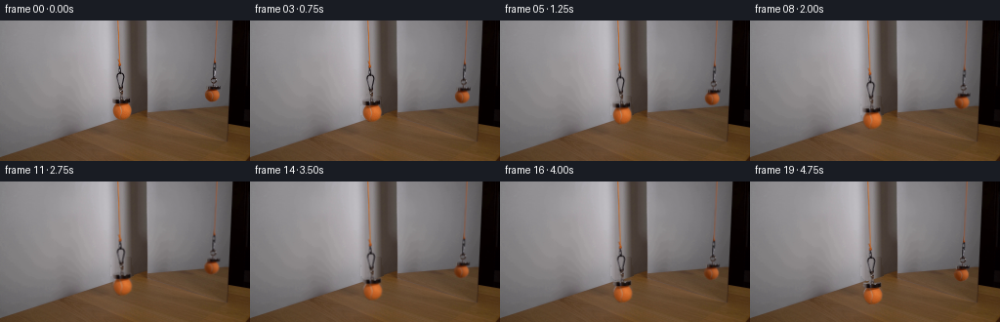
展开代码变化
--- 上一保存版本
+++ 本次保存版本
@@ -44,8 +44,9 @@
def backdrop(src, mattes):
remove=np.maximum.reduce(mattes)
hole=(remove>0.015).astype(np.uint8)
- hole=cv2.dilate(hole,np.ones((3,3),np.uint8))
+ hole=cv2.dilate(hole,np.ones((5,5),np.uint8))
bg=src.astype(np.float32).copy()
+ model=bg.copy()
# Fit the locally static vertical wall stripes using intact column samples.
# The boundary is the actual wall/table intersection, not the ball silhouette.
yy=np.arange(H)
@@ -78,7 +79,16 @@
floorval=np.tile(src[min(H-1,int(edge+5)),x],(H,1))
q=np.clip((yy-edge+0.55)/1.1,0,1)[:,None]
fill=val*(1-q)+floorval*q
+ model[:,x]=fill
bg[hole[:,x]>0,x]=fill[hole[:,x]>0]
+ # Inpaint only the small residual of the photograph relative to the fitted
+ # wall profile. The static pixel texture and gradients meet the untouched
+ # photograph continuously, even at narrow metal-loop openings.
+ for c in range(3):
+ residual=(src[:,:,c].astype(np.float32)-model[:,:,c]).copy()
+ residual[hole>0]=0
+ repaired=cv2.inpaint(residual,hole,4,cv2.INPAINT_NS)
+ bg[:,:,c]=np.where(hole>0,model[:,:,c]+repaired,src[:,:,c])
return np.clip(bg,0,255)
def refine_matte(src,bg,prior):
@@ -135,7 +145,7 @@
clean=src.astype(np.float32).copy()
clean[support>0.001]=bg[support>0.001]
# Some pixels beyond the soft source outline also contain optical spill.
- oldmask=cv2.dilate((support>0.01).astype(np.uint8),np.ones((3,3),np.uint8))
+ oldmask=cv2.dilate((support>0.01).astype(np.uint8),np.ones((5,5),np.uint8))
clean[oldmask>0]=bg[oldmask>0]
frames=[src.copy()]
for i in range(1,20):
候选 05播放与检查图
可观测工具轨迹
实际执行的命令与返回图片。
命令 1exit 0
/bin/bash -lc "ls -la && cat prompt.txt && printf '\\n---RULES---\\n' && cat GENERATION_RULES.md"
命令 2exit 0
/bin/bash -lc "cat artifact_io.py && python - <<'PY'
from PIL import Image
im=Image.open('first_frame.png');print(im.size)
im.resize((1024,576)).save('.tmp/enlarged.png')
PY"命令 3exit 0
/bin/bash -lc "python - <<'PY'
import cv2, numpy as np
print('cv',cv2.__version__)
from PIL import Image
im=Image.open('first_frame.png'); im.resize((1536,864),Image.Resampling.NEAREST).save('.tmp/pixels.png')
PY"命令 4exit 0
/bin/bash -lc "python - <<'PY'
from PIL import Image
im=Image.open('first_frame.png'); im.crop((108,35,141,108)).resize((330,730)).save('.tmp/main.png');im.crop((205,33,230,91)).resize((250,580)).save('.tmp/ref.png')
PY"命令 5exit 0
/bin/bash -lc "python - <<'PY'
from PIL import Image,ImageDraw
im=Image.open('first_frame.png').resize((1024,576),Image.Resampling.NEAREST)
d=ImageDraw.Draw(im)
for x in range(110,140,2):
d.line((x*4,35*4,x*4,106*4),fill=(255,255,255),width=1);d.text((x*4,106*4),str(x),fill='white')
for y in range(36,105,4):
d.line((110*4,y*4,140*4,y*4),fill=(255,255,255),width=1);d.text((140*4,y*4),str(y),fill='white')
im.crop((420,128,608,448)).resize((564,960)).save('.tmp/grid.png')
PY"命令 6exit 0
/bin/bash -lc "python - <<'PY'
from PIL import Image
im=Image.open('first_frame.png'); im.crop((80,75,156,124)).resize((912,588),Image.Resampling.NEAREST).save('.tmp/floor.png')
PY"命令 7exit 0
/bin/bash -lc "python - <<'PY'
import numpy as np
from PIL import Image
im=np.array(Image.open('first_frame.png'))
for y in [10,20,30,40,50,60,70,80,90,98,105]:
print(y,[(x,im[y,x].tolist()) for x in [110,114,117,119,122,125,128,130,134,138,142]])
PY"命令 8exit 0
/bin/bash -lc "cat > generate.py <<'PY'
from pathlib import Path
import numpy as np
from PIL import Image, ImageDraw, ImageFilter
import cv2
from artifact_io import save
ROOT = Path(__file__).resolve().parent
H,W=144,256
def polygon_mask(points, holes=(), scale=6):
im=Image.new('L',(W*scale,H*scale),0)
d=ImageDraw.Draw(im)
d.polygon([(round(x*scale),round(y*scale)) for x,y in points],fill=255)
for hole in holes:
d.polygon([(round(x*scale),round(y*scale)) for x,y in hole],fill=0)
return np.array(im.resize((W,H),Image.Resampling.LANCZOS)).astype(np.float32)/255
def union(masks):
return 1-np.prod([1-m for m in masks],axis=0)
def masks():
# Subpixel outlines include the original optical softening.
cord = polygon_mask([(119.5,-2),(121.4,-2),(123.25,37.8),(122.95,39.8),(121.05,39.2)])
knot = polygon_mask([(121.3,37.5),(122.8,38.5),(123.25,41),(124.15,42.1),(124.05,44.5),(122.6,46.6),(121.25,45.4),(121.45,42.8),(120.25,40.5),(120.4,38.6)])
clasp = polygon_mask([(122.05,45),(123.6,45.7),(124.05,48.9),(123.55,52.9),(121.8,54),(120.9,52.4),(121.65,49.8),(121.5,47)],
[[(122.5,48.5),(122.75,48.5),(123.02,50.4),(122.45,51.4),(122.1,50.9)]])
loop = polygon_mask([(121.6,52.3),(124.4,52.5),(126.6,54.1),(127.2,56.7),(126.9,59.3),(125.1,65.8),(124.45,68.8),(123.3,70.4),(121.45,69.9),(120.45,67.2),(119.2,63),(118.1,59.3),(118.2,56.1),(119.1,54.4)],
[[(120.5,56),(122.1,54.6),(123.75,54.7),(125.2,56.1),(125.35,58),(124.5,61.6),(123.65,65.6),(122.2,66.7),(121.5,63.75),(120.1,59.1),(119.85,57.3)]])
lower=polygon_mask([(121.75,68),(124.6,67.6),(125.45,70.2),(124.8,73),(124.6,76),(125.8,79.4),(125.7,82.3),(121.9,83.1),(121.15,81),(122.0,78.4),(122.0,75.3),(121.5,73)])
magnet=polygon_mask([(115.2,79.65),(117.0,79.4),(121.55,80.5),(125.2,80.0),(129.8,79.55),(132.6,78.9),(133.5,79.7),(133.5,83.3),(131.0,84.45),(122.5,85.5),(117.0,85.0),(115.0,83.4)])
ball=polygon_mask([(120.1,83.7),(129.0,83.5),(132.25,85.1),(134.1,88.2),(134.65,91.5),(134.2,94.9),(132.7,97.6),(130.35,99.3),(127.25,100.85),(123.45,101.3),(119.8,99.8),(117.4,97.2),(116.0,94.3),(115.45,91.2),(115.7,88.3),(117.4,85.6)])
a=union([cord,knot,clasp,loop,lower,magnet,ball])
rcord=polygon_mask([(221.3,-2),(223.0,-2),(220.7,40.9),(219.0,42.8),(218.8,40.6)])
rknot=polygon_mask([(219.15,39.8),(220.55,40),(220.9,42.5),(220.25,44.8),(218.7,44.4),(218.6,42.2)])
rloop=polygon_mask([(218.7,43.6),(220.5,43.7),(220.95,46.7),(220.35,50.4),(219.6,53.8),(219.7,57.8),(218.6,60.4),(217.2,60.15),(216.45,57.8),(217.5,54.5),(217.7,51.3),(217.8,47.1)],
[[(219.0,47.1),(219.75,47.0),(219.8,50.0),(218.8,54.5),(218.35,57.9),(218.0,57.8),(218.2,54.6),(218.25,51)]])
rbottom=polygon_mask([(216.9,58.2),(219.5,58.25),(221.2,59.3),(222.0,60.7),(221.2,63.0),(219.5,64.6),(219.2,66.8),(220.2,68.4),(216.35,69.4),(217.2,66.0),(215.65,64.3),(215.2,62.3),(215.75,59.9)],
[[(216.7,61.2),(218.0,60.4),(219.6,60.9),(220.25,62),(218.7,63.3),(217.3,63.4),(216.1,62.5)]])
rmagnet=polygon_mask([(211.9,67.05),(214.7,67),(217.3,67.9),(220.45,67.35),(224.0,67.1),(225.8,66.4),(226.2,67.1),(225.95,69.4),(224.7,70.7),(218.5,71.8),(212.0,70.7),(211.5,69.45)])
rball=polygon_mask([(215.1,70.5),(220.65,70),(223.15,72),(224.6,74.3),(224.75,77.1),(224.0,79.6),(222.1,81.8),(219.4,83.2),(216.3,83.0),(213.55,81.5),(211.4,79.6),(210.25,76.9),(210.6,74.2),(212.5,71.75)])
b=union([rcord,rknot,rloop,rbottom,rmagnet,rball])
return a,b
def backdrop(src, mattes):
remove=np.maximum.reduce(mattes)
hole=(remove>0.015).astype(np.uint8)
hole=cv2.dilate(hole,np.ones((3,3),np.uint8))
bg=src.astype(np.float32).copy()
# Fit the locally static vertical wall stripes using intact column samples.
# The boundary is the actual wall/table intersection, not the ball silhouette.
yy=np.arange(H)
for left,right,boundary in [(114,136,lambda x:139.65-.317*x),(208,228,lambda x:107.75-.089*x),(117,127,lambda x:139.65-.317*x),(217,225,lambda x:107.75-.089*x)]:
for x in range(left,right+1):
edge=boundary(x)
wall=(yy<edge-1.5)&(hole[:,x]==0)
if wall.sum()<8: continue
# smooth, nonuniform illumination is approximated without smearing
# the strong vertical architectural edge behind the near ball.
deg=2 if wall.sum()>25 else 1
val=np.stack([np.polyval(np.polyfit(yy[wall]/100,src[wall,x,c],deg),yy/100) for c in range(3)],axis=1)
floor=(yy>edge+2)&(yy<min(H,edge+28))&(hole[:,x]==0)
if floor.sum()>5:
floorval=np.stack([np.polyval(np.polyfit(yy[floor]/100,src[floor,x,c],1),yy/100) for c in range(3)],axis=1)
else:
floorval=np.tile(src[min(H-1,int(edge+5)),x],(H,1))
q=np.clip((yy-edge+0.55)/1.1,0,1)[:,None]
fill=val*(1-q)+floorval*q
bg[hole[:,x]>0,x]=fill[hole[:,x]>0]
return np.clip(bg,0,255)
def refine_matte(src,bg,prior):
# Resolve soft contours against the locally reconstructed illumination.
# Inner foreground colors are propagated only a few pixels to estimate
# physical coverage of the defocused edges.
core=(prior>0.93).astype(np.uint8)
# A slight erosion keeps backdrop contributions out of color references.
er=cv2.erode(core,np.ones((3,3),np.uint8))
# thin hardware is already only about one pixel wide, so retain its center
er[:79] = core[:79]
inv=(1-er).astype(np.uint8)
_,labels=cv2.distanceTransformWithLabels(inv,cv2.DIST_L2,5,labelType=cv2.DIST_LABEL_PIXEL)
refs=np.zeros((labels.max()+1,3),np.float32)
refs[labels[er>0]]=src[er>0]
fg=refs[labels]
diff=fg-bg
estimate=np.sum((src-bg)*diff,axis=2)/(np.sum(diff*diff,axis=2)+1e-5)
# Outside the manual contour, a narrow optical edge is admitted.
support=cv2.GaussianBlur(prior,(0,0),.48)
out=np.clip(estimate,0,1)
# Make the opaque central color unchanged; preserve natural detailed edges.
out=np.maximum(out,prior*.86)
out*=np.clip(support*8,0,1)
out[prior>.985]=1
# constrain faint edges in hollow links; exact original pixels are retained
return np.clip(out,0,1)
def warp_sprite(premul,a,dy,dx,join):
y,x=np.mgrid[:H,:W].astype(np.float32)
# Orange line lengthens by material being paid out from above the frame.
# The knot, metal suspension and ball descend as a rigid assembly.
ratio=np.clip(y/(join+dy),0,1)
sy=np.where(y<join+dy,y*join/(join+dy),y-dy).astype(np.float32)
sx=(x-dx*ratio).astype(np.float32)
wa=cv2.remap(a,sx,sy,cv2.INTER_LINEAR,borderMode=cv2.BORDER_CONSTANT,borderValue=0)
wp=cv2.remap(premul,sx,sy,cv2.INTER_LINEAR,borderMode=cv2.BORDER_CONSTANT,borderValue=0)
return wp,wa
def main():
src=np.array(Image.open(ROOT/'first_frame.png').convert('RGB'))
a,b=masks()
bg=backdrop(src,[a,b])
a=refine_matte(src.astype(np.float32),bg,a)
b=refine_matte(src.astype(np.float32),bg,b)
# Outside foreground support, use the unmodified original still photograph.
support=np.maximum(a,b)
# Avoid accidentally moving remnants of the source backdrop at matte fringes.
prem=[]
for mask in [a,b]:
fg=src.astype(np.float32)-bg*(1-mask[...,None])
fg=np.clip(fg,0,255*mask[...,None])
prem.append(fg)
clean=src.astype(np.float32).copy()
clean[support>0.001]=bg[support>0.001]
# Some pixels beyond the soft source outline also contain optical spill.
oldmask=cv2.dilate((support>0.01).astype(np.uint8),np.ones((3,3),np.uint8))
clean[oldmask>0]=bg[oldmask>0]
frames=[src.copy()]
for i in range(1,20):
# A continuous, deliberately slow descent; no swing, cut, or camera move.
t=i/19
# Smooth handling at start and finish while nearly uniform in mid-shot.
u=.12*t + .88*(t*t*(3-2*t))
dy=24.0*u
frame=clean.copy()
for k,(mat,dep,horiz,joint) in enumerate([(a,dy,.031*dy,37.7),(b,.79*dy,-.048*.79*dy,39.8)]):
col,ma=warp_sprite(prem[k],mat,dep,horiz,joint)
frame=frame*(1-ma[...,None])+col
frames.append(np.clip(frame,0,255).round().astype(np.uint8))
save(np.stack(frames),ROOT)
Image.fromarray(np.uint8(bg)).save(ROOT/'.tmp'/'background.png')
Image.fromarray(np.uint8(np.maximum(a,b)*255)).save(ROOT/'.tmp'/'matte.png')
if __name__=='__main__':main()
PY
python generate.py"命令 9exit 0
/bin/bash -lc "python - <<'PY'
from PIL import Image
for i in [0,1,8,19]:
Image.open(f'frames/{i:02d}.png').resize((1024,576)).save(f'.tmp/f{i}.png')
PY"命令 10exit 0
/bin/bash -lc "python - <<'PY' import generate as g import numpy as np,cv2 from PIL import Image a,b=g.masks();hh=cv2.dilate((np.maximum(a,b)>.015).astype(np.uint8),np.ones((3,3),np.uint8)) for x in range(114,137): y=np.arange(144); ok=(y<139.65-.317*x-1.5)&(hh[:,x]==0) print(x,ok.sum(),y[ok].min() if ok.sum() else '-',y[ok].max() if ok.sum() else '-') PY"
命令 11exit 0
/bin/bash -lc "python - <<'PY'
p='generate.py'
s=open(p).read();start=s.index(' yy=np.arange(H)');end=s.index(' return np.clip(bg,0,255)',start)
s=s[:start]+''' yy=np.arange(H)
for left,right,boundary,fitrange in [(113,137,lambda x:139.65-.317*x,(108,144)),(207,229,lambda x:107.75-.089*x,(201,233))]:
# Separate the stable horizontal architecture profile from its gentle
# vertical illumination. This prevents extrapolation through cord-only
# columns, where no uncovered pixels exist at all.
xs=np.arange(*fitrange)
# estimate row-to-row lighting only from undisturbed vertical strips
clearxs=[x for x in xs if np.sum(hole[:75,x])<4]
lit=np.mean(src[:,clearxs].astype(float),axis=1)
good=yy<75
trend=np.stack([np.polyval(np.polyfit(yy[good]/100,lit[good,c],2),yy/100) for c in range(3)],axis=1)
trend-=trend[20].copy()
profiles=np.full((len(xs),3),np.nan)
for k,x in enumerate(xs):
wall=(yy<boundary(x)-2)&(hole[:,x]==0)
if wall.sum()>=5:
profiles[k]=np.median(src[wall,x]-trend[wall],axis=0)
valid=np.isfinite(profiles[:,0])
for c in range(3):
profiles[:,c]=np.interp(xs,xs[valid],profiles[valid,c])
for x in range(left,right+1):
edge=boundary(x)
val=profiles[x-fitrange[0]]+trend
floor=(yy>edge+2)&(yy<min(H,edge+28))&(hole[:,x]==0)
if floor.sum()>5:
floorval=np.stack([np.polyval(np.polyfit(yy[floor]/100,src[floor,x,c],1),yy/100) for c in range(3)],axis=1)
else:
floorval=np.tile(src[min(H-1,int(edge+5)),x],(H,1))
q=np.clip((yy-edge+0.55)/1.1,0,1)[:,None]
fill=val*(1-q)+floorval*q
bg[hole[:,x]>0,x]=fill[hole[:,x]>0]
''' + s[end:]
open(p,'w').write(s)
PY
python generate.py
python - <<'PY'
from PIL import Image
Image.open('frames/19.png').resize((1024,576)).save('.tmp/f19.png');Image.open('.tmp/background.png').resize((1024,576)).save('.tmp/bigbg.png')
PY"命令 12exit 0
/bin/bash -lc "python - <<'PY'
p='generate.py';s=open(p).read();s=s.replace('hole=cv2.dilate(hole,np.ones((3,3),np.uint8))','hole=cv2.dilate(hole,np.ones((5,5),np.uint8))');s=s.replace(' bg=src.astype(np.float32).copy()',' bg=src.astype(np.float32).copy()\\n model=bg.copy()');s=s.replace(' bg[hole[:,x]>0,x]=fill[hole[:,x]>0]',' model[:,x]=fill\\n bg[hole[:,x]>0,x]=fill[hole[:,x]>0]');s=s.replace(' return np.clip(bg,0,255)',''' # Inpaint only the small residual of the photograph relative to the fitted
# wall profile. The static pixel texture and gradients meet the untouched
# photograph continuously, even at narrow metal-loop openings.
for c in range(3):
residual=(src[:,:,c].astype(np.float32)-model[:,:,c]).copy()
residual[hole>0]=0
repaired=cv2.inpaint(residual,hole,4,cv2.INPAINT_NS)
bg[:,:,c]=np.where(hole>0,model[:,:,c]+repaired,src[:,:,c])
return np.clip(bg,0,255)''');s=s.replace('np.ones((3,3),np.uint8))\\n clean[oldmask>0]', 'np.ones((5,5),np.uint8))\\n clean[oldmask>0]');open(p,'w').write(s)
PY
python generate.py
python - <<'PY'
from PIL import Image
Image.open('frames/19.png').resize((1024,576)).save('.tmp/f19.png');Image.open('.tmp/background.png').resize((1024,576)).save('.tmp/bigbg.png')
PY"命令 13exit 0
/bin/bash -lc "python - <<'PY'
from PIL import Image
Image.open('frames/01.png').resize((1024,576)).save('.tmp/f1.png')
PY"命令 14exit 0
/bin/bash -lc "python - <<'PY'
from PIL import Image
import numpy as np
from pathlib import Path
p=np.load('pixels.npz')['pixels']
assert p.shape==(144,256,20)
a=np.array(Image.open('first_frame.png').convert('RGB'))
b=np.array(Image.open('frames/00.png').convert('RGB'))
assert np.array_equal(a,b)
assert len(list(Path('frames').glob('*.png')))==20
print('Validated: 20 frames, 256Ã144 RGB, initial frame exact.')
PY
command -v ffmpeg || true"视觉工具实际返回图片 1
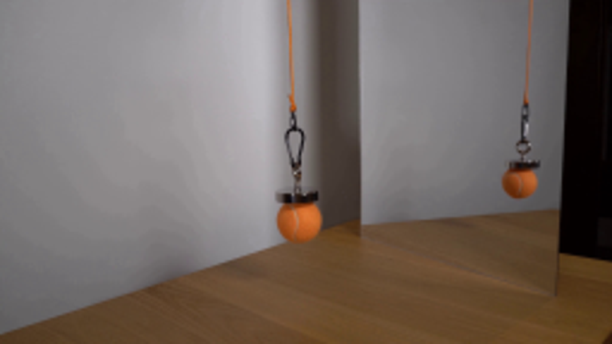
视觉工具实际返回图片 2
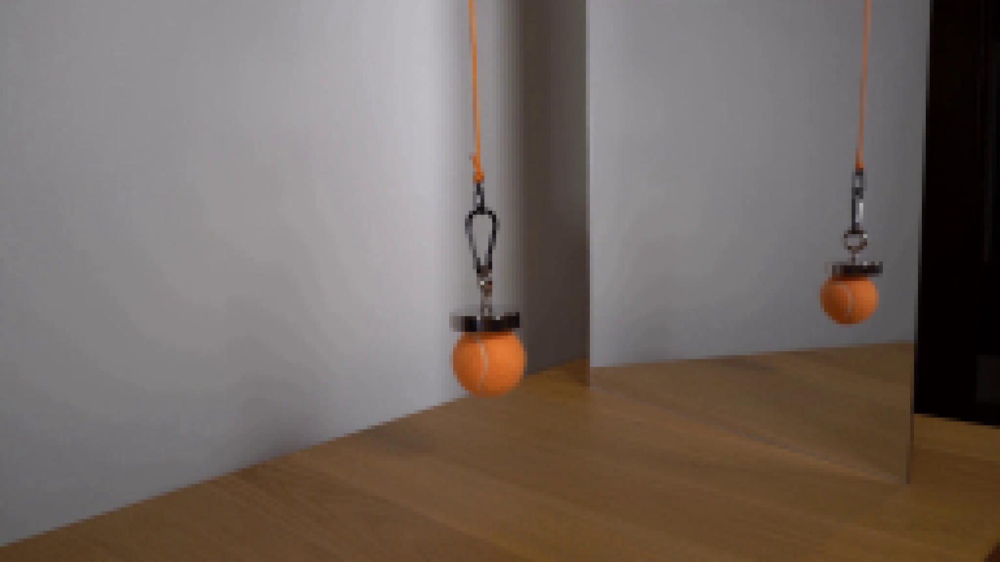
视觉工具实际返回图片 3
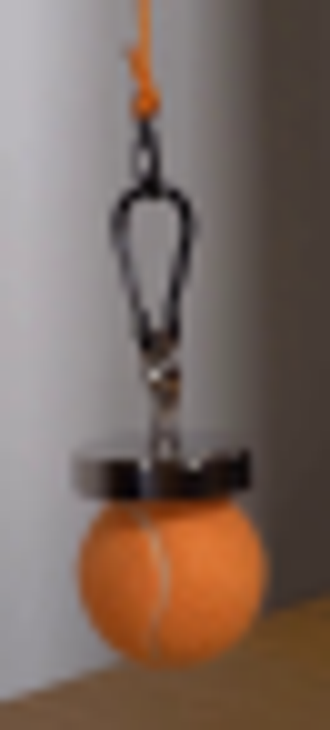
视觉工具实际返回图片 4
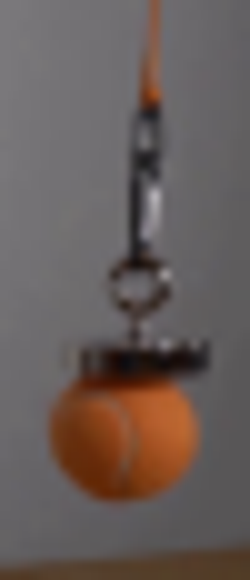
视觉工具实际返回图片 5
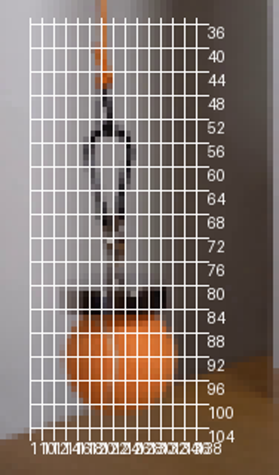
视觉工具实际返回图片 6
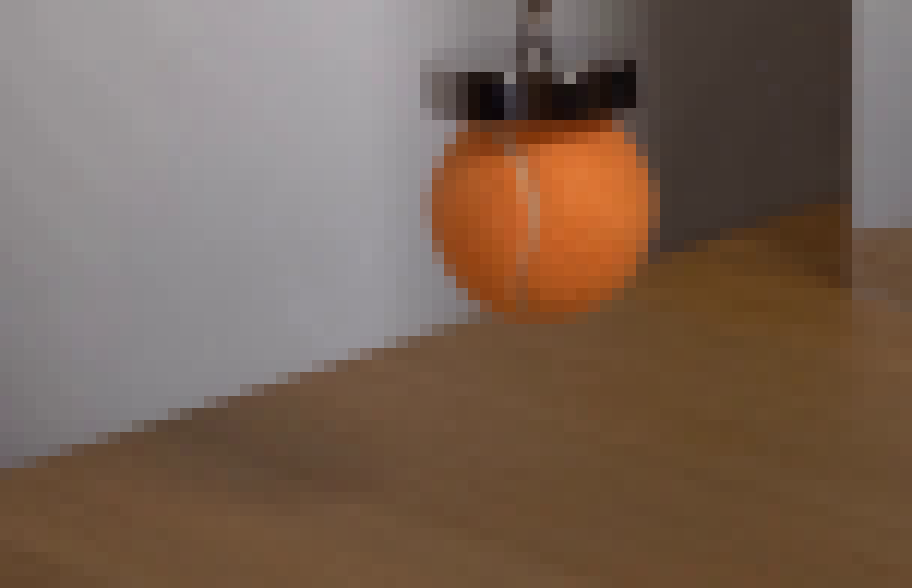
视觉工具实际返回图片 7
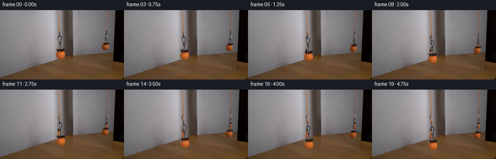
视觉工具实际返回图片 8
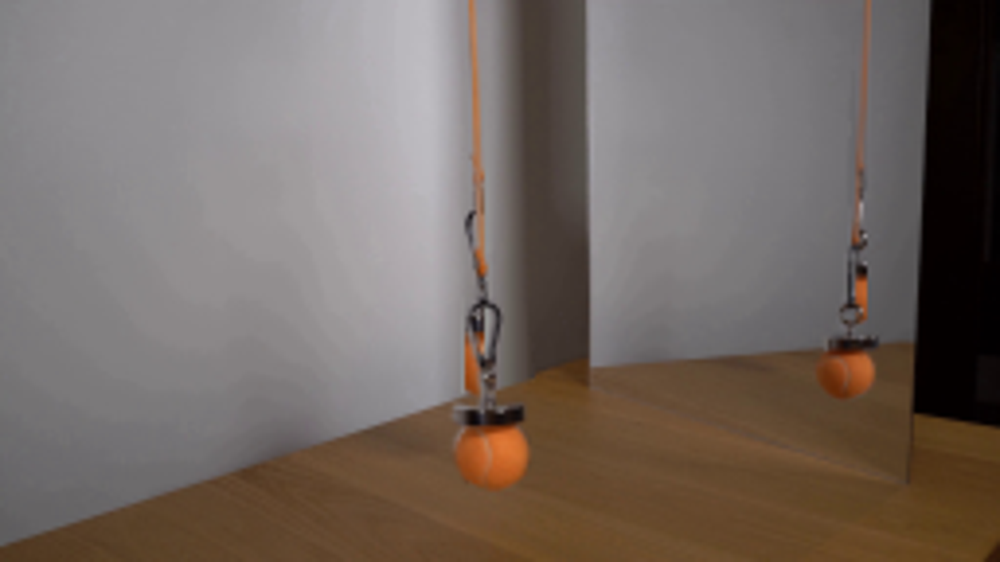
视觉工具实际返回图片 9
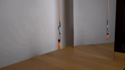
视觉工具实际返回图片 10
视觉工具实际返回图片 11
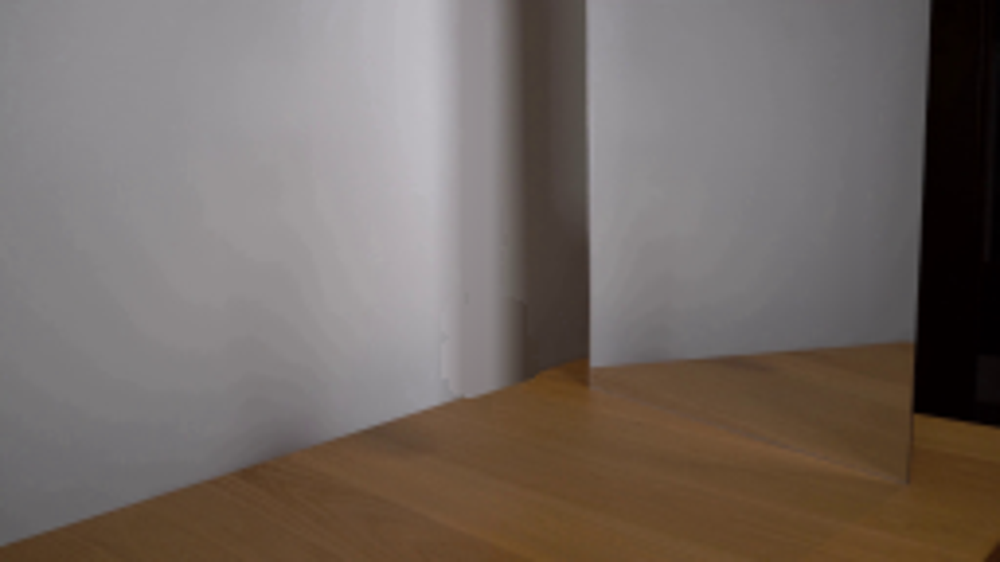
视觉工具实际返回图片 12
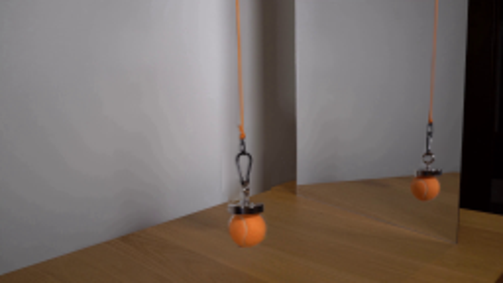
视觉工具实际返回图片 13
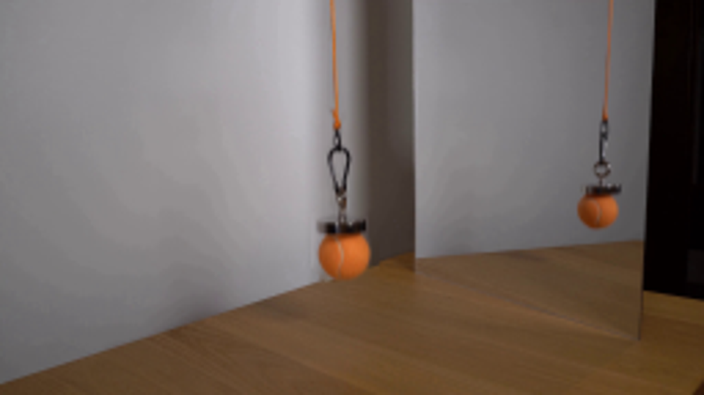
保存候选 5 份；完成命令 14 次；可验证图片返回 13 张。原始 API 响应与完整日志保留在本地。